第1章 眼部
原书页 15–25 · 11 个页面区块 · 13 张配图。正文、图注与图片保持原书顺序。
| • AC | anterior chamber | 前房 |
| • CB | ciliary body | 睫状体 |
| • - | cornea | 角膜 |
| • - | iris | 虹膜 |
| • LG | lacrimal gland | 泪腺 |
| • - | lens | 晶状体 |
| • - | muscle | 肌肉 |
| • OA | ophthalmic artery | 眼动脉 |
| • ON | optic nerve | 视神经 |
| • PC | posterior chamber | 眼后房 |
| • PCA | posterior ciliary artery | 睫后动脉 |
| • - | scleral | 巩膜 |
| • SOV | superior ophthalmic vein | 眼上静脉 |
| • VB | vitreous body | 玻璃体 |
一、 解剖概要
眼分为眼球、视路和眼附属器三部分，为视觉器官。眼球近于球形，其前后径为24mm，垂直径为23mm，水平径为23.5mm，位于眼眶内。眼球分眼球壁和眼内容物两部分。眼球壁包括三层膜：外层为纤维膜，中层为色素膜，内层为视网膜。眼内容物包括房水、晶状体和玻璃体（图1-1）。
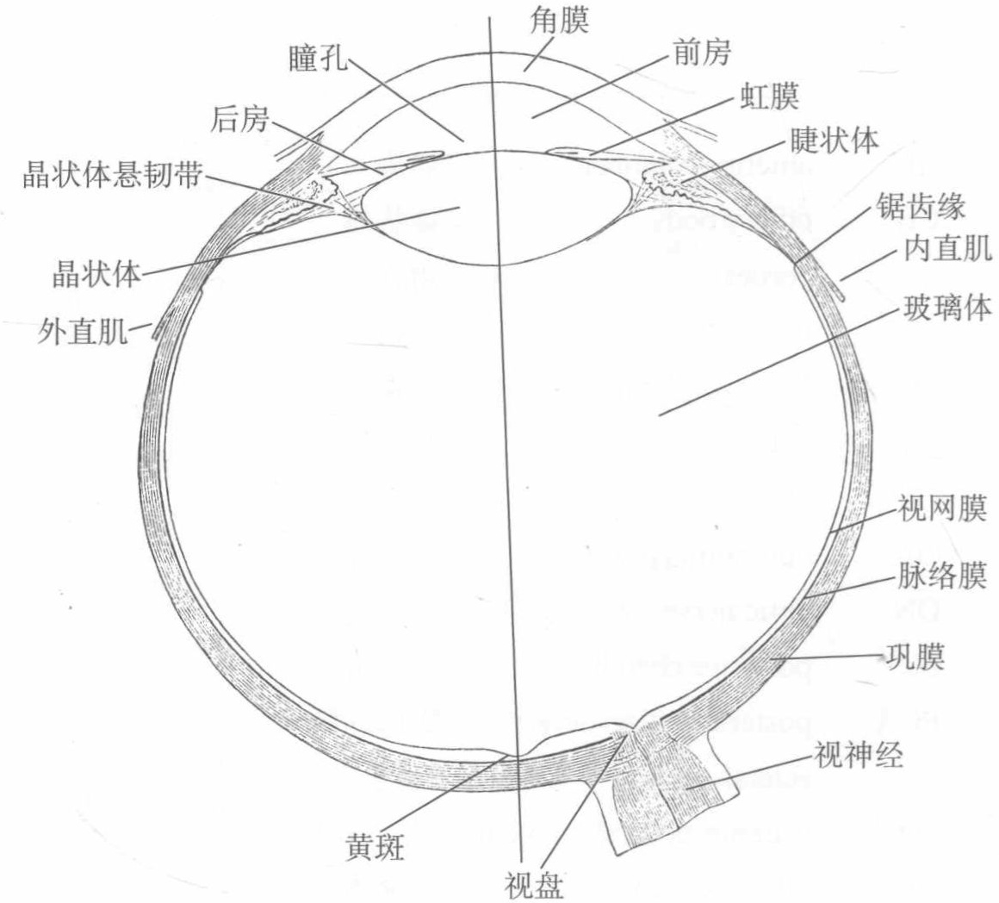
图1-1 眼球水平切面
二、 眼前段和眼角声像图
眼前段和眼角及周边结构声像图见图1-2和图1-3。
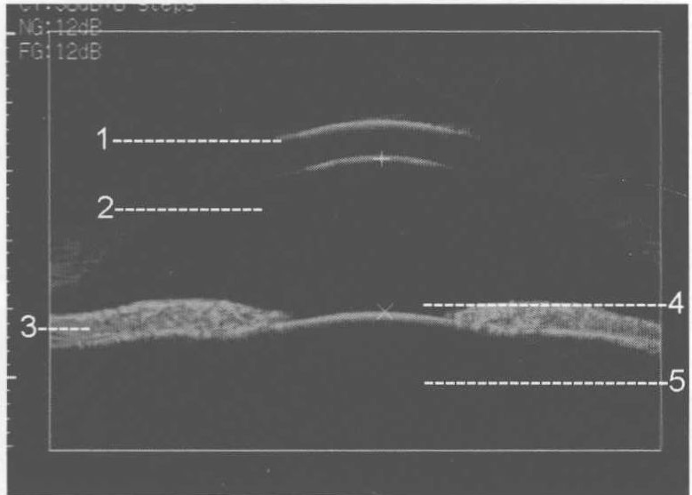
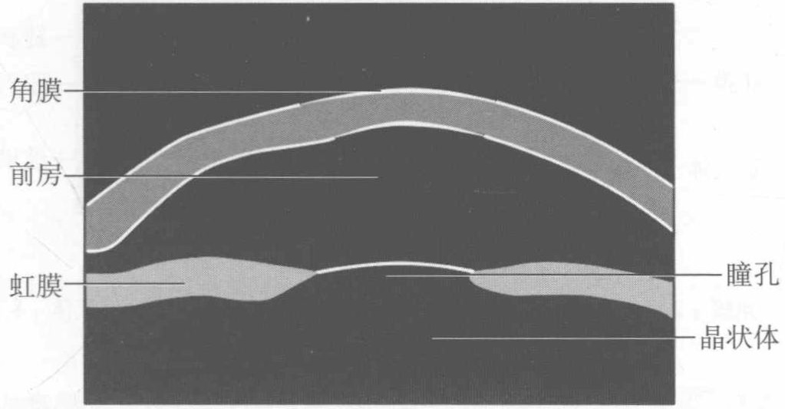
图1-2 眼前段的中央区UBM图像
注：1. 角膜；2. 前房；3. 虹膜；4. 瞳孔；5. 晶状体
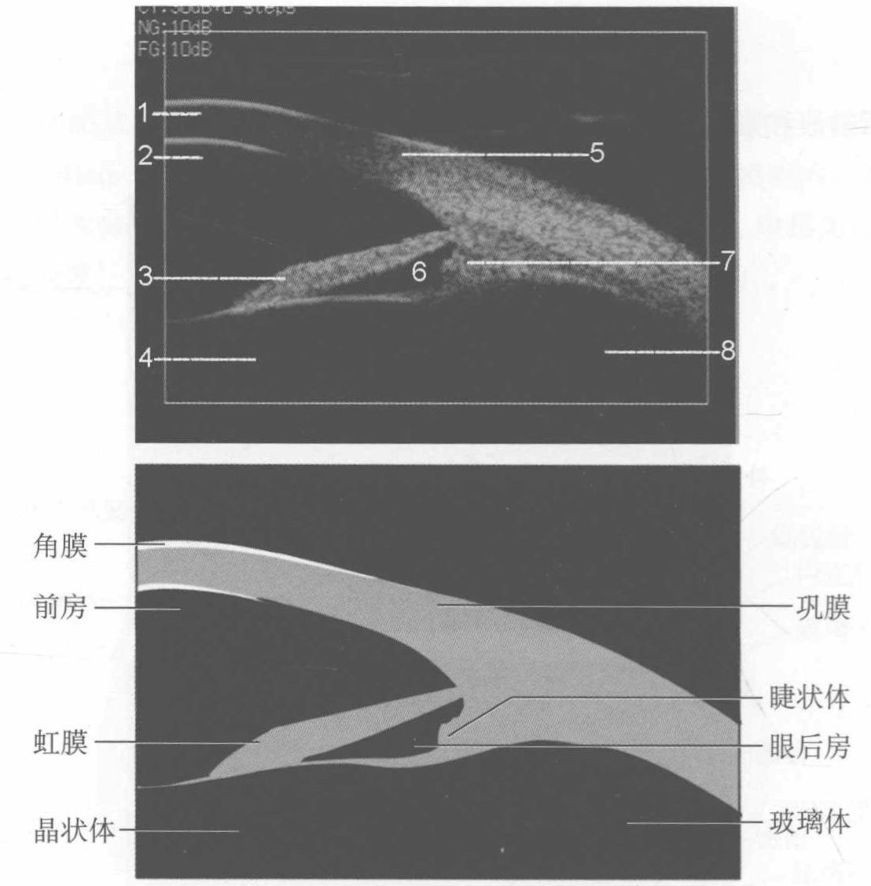
图1-3 眼角及周边结构的UBM图像
注：1. 角膜；2. 前房；3. 虹膜；4. 晶状体；5. 巩膜；6. 眼后房；7. 睫状体；8. 玻璃体
【扫查方法】 患者为仰卧位，双眼表面麻醉后将眼杯置于结膜囊内，注入对角膜无刺激性的液体介质，将探头放在介质内对眼前段进行水浴检测。
【断面结构】受仪器显示范围的限制，一般眼前段中轴位切面可以显示角膜、前房、晶状体前囊、部分虹膜和瞳孔。在探头与角巩膜缘相垂直获得的切面上可以观察到角巩膜缘、部分巩膜、前房、虹膜、晶状体囊、房角、后房、晶状体悬韧带、睫状体和周边玻璃体等结构。
【测量方法及正常值】轴位切面上可以获得眼前段的主要参数。
测量完全根据 Pavlin 所设计的方法进行。首先自巩膜突向上 500μ m 确定一点，通过虹膜向睫状体作一垂直线，此两点间距离称小梁睫状体距离（TCPD）。此处的虹膜厚度为虹膜厚度 1（ID1），此垂线自虹膜内表面至睫状体距离为虹膜睫状体距离（ICPD）。距离虹膜根部向瞳孔方向 2mm 处
测得虹膜厚度2（ID2），近瞳孔缘处测得虹膜厚度3（ID3）。自虹膜内表面至睫状突与悬韧带的接点作垂线，此距离为虹膜悬韧带距离（IZD）。虹膜内表面与晶状体前表面的夹角为 θ2，此点至瞳孔缘的距离为虹膜晶状体接触距离，巩膜外侧面与虹膜长轴的夹角为 θ3，与睫状突的夹角为 θ4。角膜与虹膜的夹角可用 θ1表示（图1-4）。
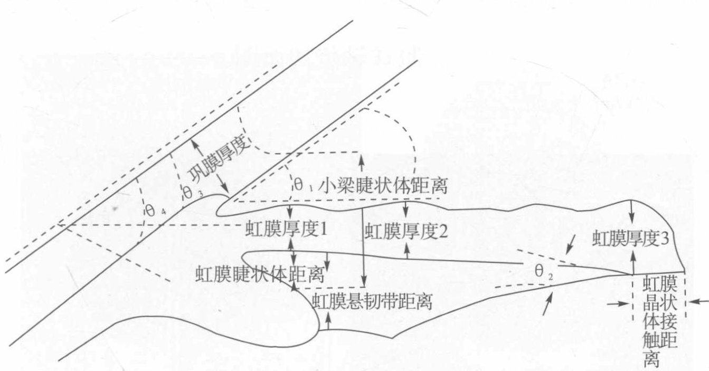
图1-4 眼前段测量方法
眼前段结构的正常值见表1-1。
表1-1 正常人眼前段结构的主要参数
| 测量部位 | χ ± s | 测量部位 | χ ± s |
| 虹膜厚度1（μ m） | 390.88 ± 88.27 | 虹膜厚度2（μ m） | 481.17 ± 57.70 |
| 虹膜厚度3（μ m） | 800.42 ± 84.92 | 小梁睫状体距离（μ m） | 1210.43 ± 233.00 |
| 小梁虹膜夹角（°） | 33.43 ± 8.58 | 虹膜睫状体距离（μ m） | 62.41 ± 134.25 |
| 虹膜晶状体夹角（°） | 17.22 ± 5.24 | 虹膜悬韧带距离（μ m） | 939.95 ± 406.20 |
| 巩膜外侧面虹膜长轴夹角（°） | 37.44 ± 5.28 | 虹膜晶状体接触距离（μ m） | 978.13 ± 207.16 |
| 巩膜外侧面睫状突夹角（°） | 71.63 ± 13.87 |
【临床价值】 应用超声生物显微镜（换能器频率50MHz）可以清晰地显示眼前段的形态结构，得到类似低倍光学显微镜的图像，尤其对房角结构、后房、睫状体、周边玻璃体疾病的显示更具独到之处。对于房角相关性疾病（青光眼）、眼外伤所致的低眼压综合征、周边玻璃体疾病（炎症、异物）等均有很好的诊断价值。
【附注】 超声生物显微镜的应用尚未十分普遍，介绍其的目的是请大家了解对眼前段的显示有更清晰的诊断方法。
三、 眼球轴位切面图
眼球轴位切面见图1-5。
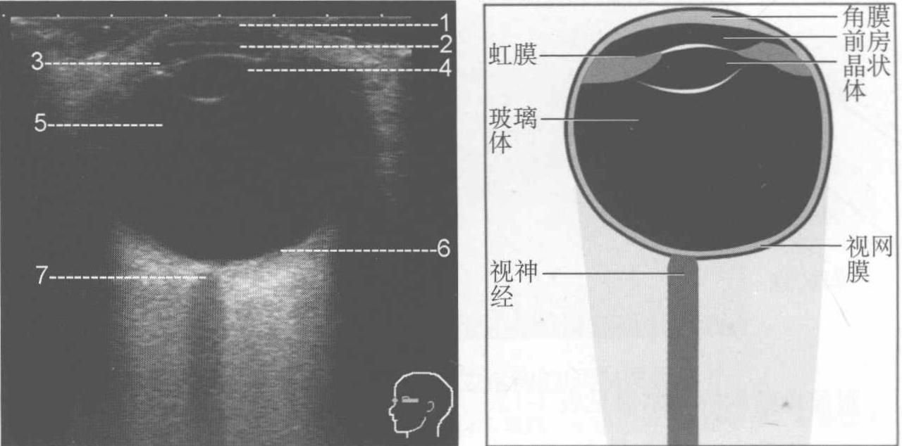
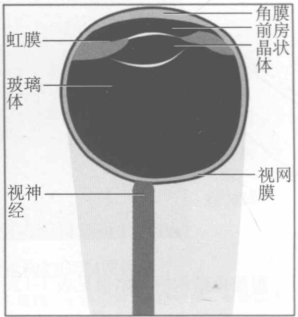
图1-5 眼球轴位切面
注：1. 角膜；2. 前房；3. 虹膜；4. 晶状体；5. 玻璃体；6. 视网膜；7. 视神经
【扫查方法】应用高频线阵探头，将探头水平放置，嘱病人平卧位，眼球向上直视，可以获得自角膜顶点向后通过视神经的眼球轴位切面。如果眼球的周边部显示欠清晰，可以让病人的眼球左右转动，则可将周边部也较清晰地显示。【断面结构】角膜、前房、虹膜、晶状体、玻璃体、眼球壁、视神经、眼外肌等结构。
【测量方法及正常值】一般只测量眼球的轴长。选择角膜顶点到视盘旁3mm左右的眼球壁之间的距离为测量的参照点。正常值一般为23.5～24.5mm。至于前房深度、晶状体厚度、玻璃体腔长度等眼球的生物学参数一般不建议用二维超声测量。
【临床价值】 超声检查是眼部疾病的很好的诊断方法之一，尤其对那些屈光间质不清、无法用常规的检查方法窥见眼底的病人，用于诊断屈光间质浑浊、眼外伤、眼肿瘤等疾病。
四、 泪腺的正常声像图
泪腺的正常声像图见图1-6。
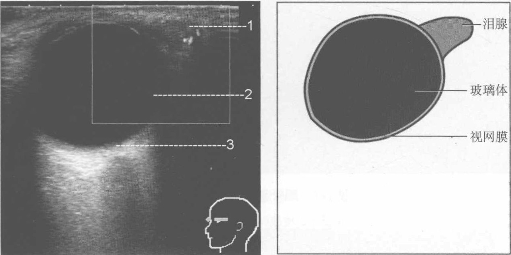
图1-6 泪腺的正常声像图
注：1. 泪腺；2. 玻璃体；3. 视网膜
【扫查方法】将探头水平放置，探头方向指向眼球的颞上方即可显示睑部泪腺结构。眶部泪腺受眶骨遮挡，一般显示欠完整、清晰。
【断面结构】二维超声脸部泪腺表现为眼球颞上类三角形中低回声，与轴位组织间界限清晰，内为均匀的中强点状回声。
【测量方法及正常值】清晰显示泪腺结构后即可测量泪腺的最大径线值。
解剖学眶部泪腺大小为 10mm × 20mm，脸部泪腺的大小为其 1/3 ∼ 1/2。超声测量的结构受其对泪腺显示能力的限制，一般较解剖学小。
【临床价值】应用超声诊断泪腺疾病有很高的临床价值。尤其对脸部泪腺疾病的诊断有自己的特点。如果病变较大或累及眶部泪腺，可采用经球法观察眶部泪腺的情况。综合脸部和眶部泪腺的检查结果，可以对泪腺疾病有较全面的理解。
五、 眼外肌的正常声像图
眼外肌的正常声像图见图1-7。
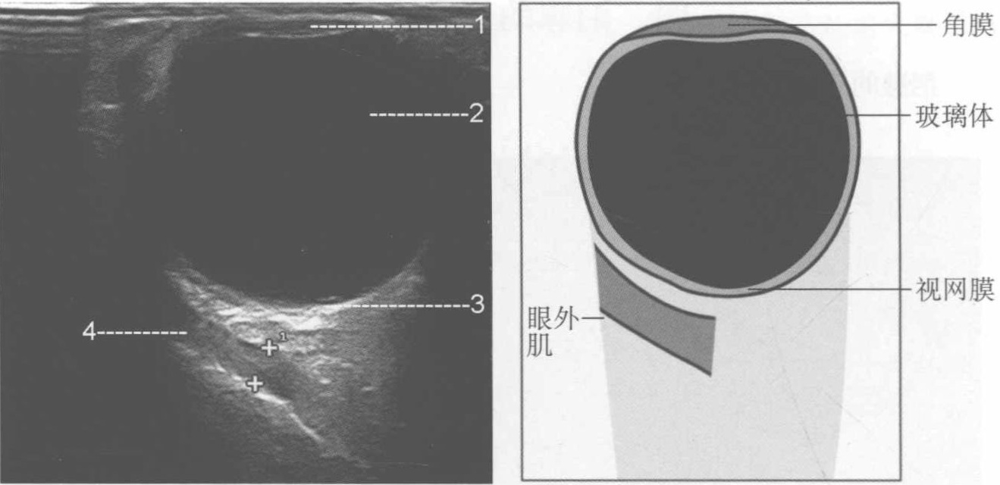
图1-7 眼外肌的正常声像图
注：1. 角膜；2. 玻璃体；3. 视网膜；4. 眼外肌
【扫查方法】采用纵扫描。纵扫描是将探头置于被检查肌肉的对侧，探头标指向角膜中央和被检查的肌肉。垂直于角膜缘前后来回扫描，因此呈现肌肉的长轴切面图像。
1. 内直肌的扫查方法 眼球原位，探头置于眼球颞侧赤道部。
2. 外直肌的扫查方法 探头置于眼球鼻侧，如鼻梁部对检查有妨碍，眼球可向外侧转动 10° 进行检查。
3. 下直肌的扫查方法 探头置于眼球上方，眼球向下转动 10°，以方便检查。
4. 上直肌和提上睑肌复合体的扫查方法 探头置于眼球下方，可显示为两个低回声结构，但不易分辨。
【断面结构】表现为起自眼球周边向球后延续的带状低回声即眼外肌，因与周围的眶内组织之间存在肌肉的腱膜而有一明确的界限。
【测量方法及正常值】 测量基于纵扫描方式显示眼外肌，选择肌腹的后1/3处进行测量（表1-2）。
表 1–2 正常眼外肌厚度
| 肌肉 | 正常范围（mm） |
| 上直肌/提上睑肌复合体 | 3.9～6.8 |
| 外直肌 | 2.2～3.8 |
| 下直肌 | 1.6～3.6 |
| 内直肌 | 2.3～4.7 |
| 全部肌肉 | 11.9～16.9 |
【临床价值】应用超声检查测量眼外肌厚度的临床参考意义有待商榷。笔者不推荐此方法，因其可重复性及测量的准确性都不十分理想。但对于波及眼外肌的病变，如炎症、占位等可考虑此方法。如果仅希望通过测量眼外肌的厚度诊断相关疾病，如甲状腺相关眼眶病等，建议行MRI检查，结果将更直接、更可靠。
六、 眼部血管彩色多普勒及脉冲多普勒频谱
眼部血管彩色多普勒及脉冲多普勒频谱声像图见图1-8。
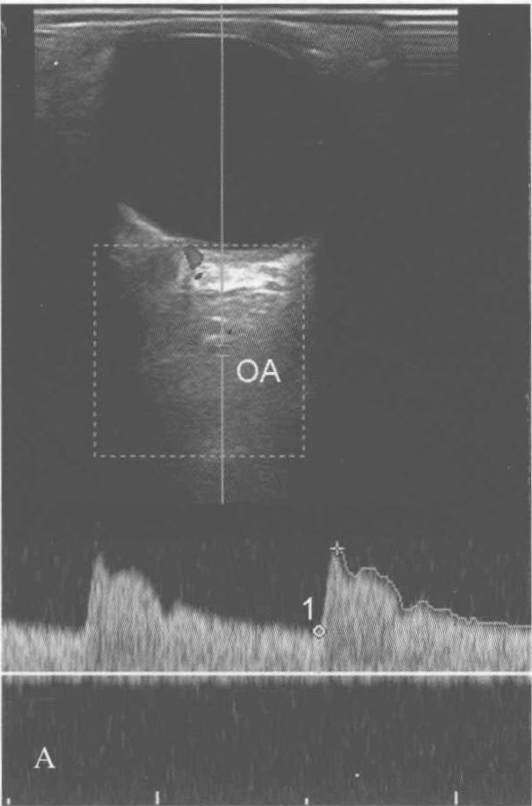
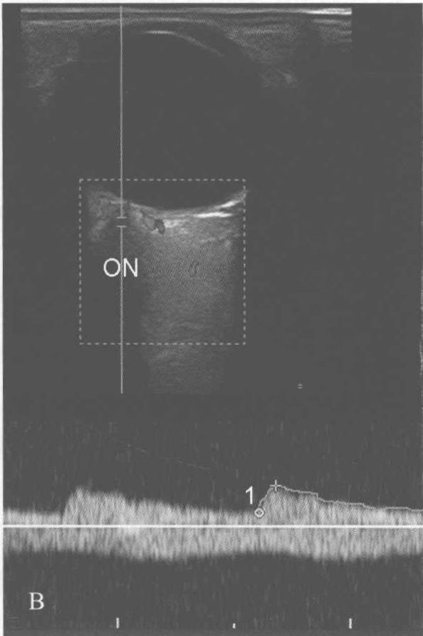
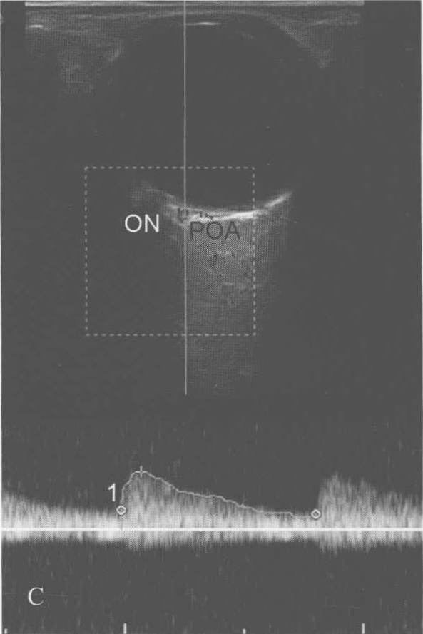
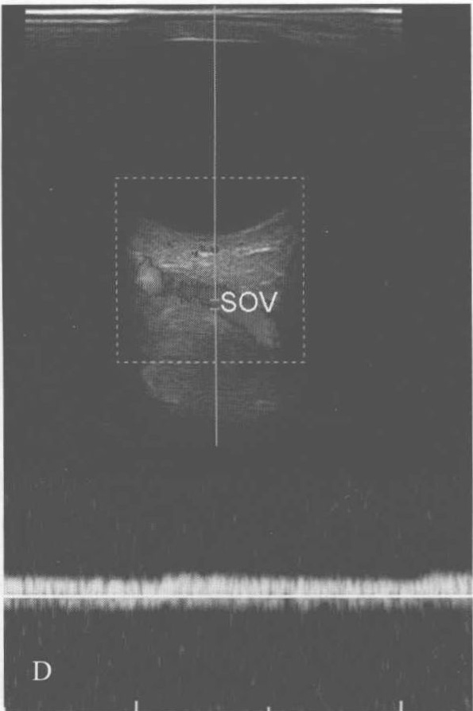
图1-8 眼部血管彩色多普勒及脉冲多普勒频谱声像图
注：A. 眼动脉（OA）；B. 视网膜中央动脉静脉；C. 睫状后短动脉（POA）；D. 眼上静脉（SOV）；ON. 视神经
【扫查方法】 做眼球的水平切面，清晰显示视神经并对眶内血管进行定位。将多普勒取样框置于眼球后15～25mm处，在视神经的两侧寻找类似英文字母“S”的粗大血管，即眼动脉。视神经中央的血流信号即视网膜中央动脉和视网膜中央静脉，取样点在眼球壁后2～5mm处。围绕视神经旁的血流信号为睫状后短动脉，取样点在眼球壁后5～8mm处。
【断面结构】 眶内可见丰富的血流信号。一般而言，球后 15 ∼ 20 mm 视神经鼻侧可见血流信号，一般为眼动脉（OA）；视神经（ON）内红蓝相间的血流信号为视网膜中央动脉和视网膜中央静脉；视神经旁的簇状血流信号为睫状后短动脉（PRA）。不是每个病人都能显示眼上静脉（SOV），一般在内直肌和视神经之间可以被观察到。
【测量方法及正常值】对于眼球的动脉血管一般按照外周血管常用的测量方法进行测量，其正常参数见表1-3，包括收缩期峰值血流速度（peak systolic velocity, PSV）、舒张末期血流速度（end diastolic velocity, EDV）、时间平均最大血流速度（time average peak velocity, Tmax）等，仪器通过
公式可以计算出搏动指数（pulsatility index，PI）和阻力指数（resistive index，RI）及收缩期峰值血流速度和舒张末期血流速度之比（S/D: PSV/EDV）。
表1-3 北京同仁眼科中心正常人眼部血管血流参数值（单位：cm/s）
| PSV | EDV | Tmax | PI | RI | S/D | |
| 眼动脉（OA） | 31.47± | 7.11± | 12.44± | 2.02± | 0.77± | 4.60± |
| 9.63 | 2.34 | 3.64 | 0.71 | 0.06 | 1.08 | |
| 视网膜中央动脉（CRA） | 10.82± | 3.28± | 5.50± | 1.48± | 0.71± | 3.93± |
| 2.97 | 1.11 | 2.06 | 0.49 | 0.08 | 1.28 | |
| 睫状后短动脉（PCA） | 11.61± | 3.34± | 5.83± | 1.49± | 0.70± | 4.29± |
| 3.41 | 1.25 | 1.91 | 0.43 | 0.09 | 1.82 |
【临床价值】应用彩色多普勒超声显示眼眶内的血管是十分敏感的，根据解剖定位可以准确地识别相应的血管。应用此方法对眼相关疾病如血管阻塞、炎症、缺血性病变、眼眶的血管畸形等均有很好的参考价值。
（杨文利）